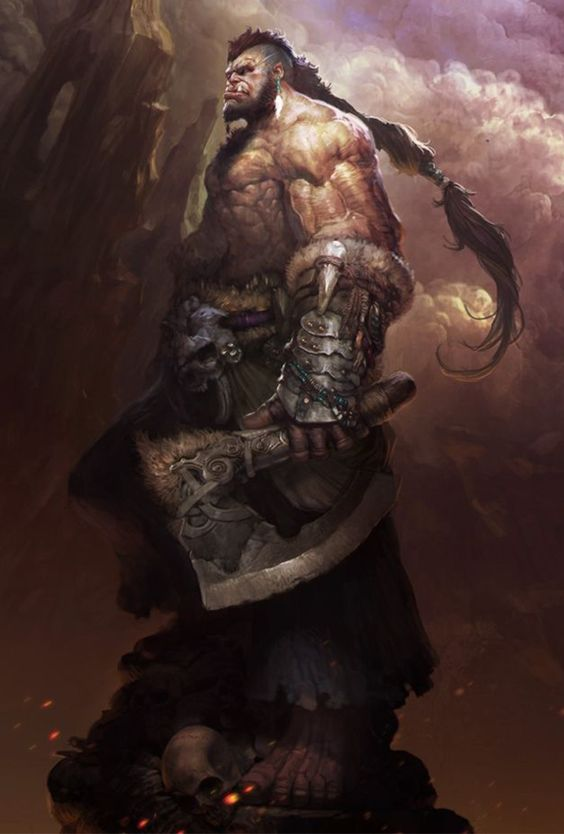

Bob

Armağan Özcan ZİYADE tarafından canlandırılmış ve oynanmıştır. Armağan'ın ikinci karakteridir. Bob Escar Ormanları'nda Daffru kabilesinde doğmuş ve büyümüş bir yarı Orc'tur. Babası kabilesinden hangi avcı olduğu bilinmese de bir avcıdır, annesi ise Escar Ormanları girişindeki civar köylerden kaçırılmış bir insandır. Rızasız bir ilişkinin sonunu oluşmuş bir üründür. Orcların üremek için insan veya diğer ırkların kadınlarını kaçırdıkları durumda, bu rızasız girilen ilişkiler silsilesinden ötürü çocukların spesifik olarak kimden olduğu seçilemeyeceğinden ötürü, ilişki sırasında orada bulunan bütün erkek orclar, orada doğan bütün çocukların hepsinin babaları sayılır. Bob da, kabilenin avcılarının sırası geldiğinde ilişkiye girdiklerin kadınlardan birinin ürünüdür. Kabilesinin Totem öğretilerini benimsemiş ve aynı kim olduğunu kişi olarak tanımadığı babası gibi bir avcı olarak yetiştirilmiştir. Bir gün Bob yeterince büyüdükten sonra, kabilesinin ona ve onun yaşıtlarına verdiği bir av niteliğinde görev ile, üremesi için bir kadın kaçırma ile görevlendirildi, böyleye erkekliğini kanıtlayacaktı. Fakat Escar Ormanları civarlarındaki köylerden birine saldırdıkları vakitte, Bob'un ismini bilmediği, fakat ismi Yeminli Alev olan gezgin bir Paladin Grubu'nun o köye yapılan baskına yetişmesi yüzünden Orclar katledilmiş, yaşayanlar ise esir olarak alınmıştı. Bob kendisi gibi birkaç yaşıtı ile birlikte esir düşmüştü ve bu şekilde Beyaz Şehir'in yolunu tuttular. Uzun bir yol boyunca esir şeklinde yolculuk etmek ve evinden koparılmak zorunda kalmış Bob, ortak lisanda bile konuşmasını bilmiyordu. Yol boyunca hayatının o anına kadar en acınası dönemlerini yaşamıştı. Bu hayatı sorguladığı ve esirliğin neye benzediğini yaşadığı uzun yolculuğun sonunda Beyaz Şehir'e gelmişti. Köye yaptıkları baskın sırasında, kendini bir savaşçı olarak öne çıkardığı için Bob'u Beyaz Şehir Büyük Arenası'na bir Gladyatör olarak sattılar. Hayatının bu döneminden sonrasını köle olarak geçireceği, satılması ile kesinleşmişti...
Bütün İmparatorluk'ta ve özellikle Beyaz Şehir'de Yeşil Derili Irklar, yakalandıkları veya esir düştükleri vakitte köle statüsünde kullanılırlar çoğu durumda. Kölelik legaldir ve en yaygın kullanılan köle çeşitlerinden birisi de orclardır. Köleler, özellikle angarya işlerde ve tehlikeli durumlarda kullanılırlardı. Lakin Bob'un hayatı tehlikede olsa da, kendini kanıtlamayı başarırsa özgürlüğüne kavuşabileceği bir yol vardı önünde. Bob hayatının çok büyük bir kısmını bu arenada özgürlüğünü elde etmeyi deneyerek geçirdi. Büyük Arena'nın kuralları gereğince bir gladyatör köle; en az 15 maç duello, 10 maç hayatta kalma savaşı, 5 maç yaratık dövüşü, 2 maç playoff ve en sonunda Arena Şampiyonu ile yapılan dövüşlerin hepsini kazanırsa, o zaman özgürlük hakkını kazanır. Bob da bu yol ile özgür kalmayı kafasına koymuştu, başka bir seçeneği de yoktu... Zaman içerisinde müsabakalara katıldı ve yıllar içinde hem ortak lisanı hem de diğer bazı dilleri öğrendi. Arena'da hızlı yükselen bir figür olarak dikkat çekiyordu, savaş kaybetmiyor ve favori olmamasına karşın rakiplerini alt etmeyi başarıyordu. Arenada kaldığı yıllar boyunca, vücut olarak da gelişmeye ve büyümeye devam etmişti, bir insana nazaran devasa boyutlara ulaşmıştı. Bazı noktalarda soylular ve zenginler, eğlence olması açısından onun önüne engel koyuyor ve silahsız bir şekilde yaratıklara karşı çıkartıyorlardı, fakat Bob beklenmedik bir şekilde, en üst düzey hayatta kalma içgüdüsüyle her savaştan galip ayrılıyordu. Yıllar geçti, Bob yaşlandı ve 30 zafer kazandı, bu şekilde Halk'ın Sesi oylamasına çıkmaya hak kazandı. Zenginler ve soylular Bob'u sevmiyordu, onlara çok para kaybettirmişti, lakin farklı olmasından kaynaklanarak avam halk onu sempatik buluyor ve seviyordu. Halkın oylamasında büyülü bir ölçüm ile, Halk'ın oyunun %83'ünü aldı ve Özgürlük Turnuvası'na girmeye hak kazandı. Bob'un namı yürüyordu, insanlar onu seviyor ve destekliyordu. İmparatorluğun sesinin ulaşabildiği bütün diyarlara haber yayılıyordu. Turnuva günü, Imparator 1. Vsag'ın doğacak oğlu olan Shaun Du Couteau'nun doğumundan sonraki 40. gün olarak belirlenmişti. Bu süreçte bu turnuvaya bütün diyardan inanılmaz bir ilgi yağıyor, şenlik hazırlıklarına başlanıyordu.
Bob bu süreçte, Veteran Gladyatör abileri ile çalışıyor ve formunun en üst seviyesine çıkmak için bütün imkanları sonuna kadar zorluyordu. Hayatı boyunca esir düştüğü bu konumdan kurtulabilmesi için yenmesi gereken sadece birkaç savaş kalmıştı. Turnuva günü gelip çattığında ise, kendini gibi yükselmeye hak kazanmış elit gladyatörler ile dövüşmüş ve bu savaşları çok zor da olsa kazanmayı başarmıştır. Final müsabakasında ise Arena Şampiyonu Julius Bellator Magnus Invictus ile karşılaşmıştır. Julius, Bob'un şu zamana kadar karşılaştığı en zorlu rakipti ve normal bir insan değildi. İnanılmaz bir fırlatma gücüne sahipti, çok uzun mesafelere kadar ağ ve kendi özel silahı olan Trident'ini fırlayabiliyordu. Bob'un hiçbir rakibi onunla temiz dövüşmemişti şu ana kadar, Bob da temiz bir şekilde savaşmazdı, ama bu Julius denen adam çıtayı farklı bir seviyeye çıkarıyordu. Hem Bob'u rezil ediyor hem de seyircileri eğlendiriyordu. Bu savaşta Bob, kabilesinin öğretileri olan Totem Güçlerini uyandırmıştı, ve savaş oldukça uzun sürmüştü, fakat Bob ne kadar iyi bir iş çıkarmış olsa da, Julius'un merhametine kalmış bir biçimde dövüşü kaybetmişti. Julius, Bob'u öldürmeyi değecek birisi olarak bulmadı ve onun canını bağışladı. Bob'un şu zamana kadar çabalayıp uğraştığı süreç boşa gitmişti, her şeyi en baştan yapmak zorundaydı. Bob büyük bir çaresizliğe kapılmıştı, Bob'un hayatı onun için anlamını yitirmişti. Fakat arka alana doğru giderken kalabalığın arasından birisi, Bob'un dövüş yeteneklerini takdir etmişti, ve onun özgürlüğe kavuşmak isteyip istemediğini sormuştu. Bu adam, Demir El'in 1. Tümen Lideri Lorenzo'ydu. Demir El, diyarda gezgin bir şekilde dolaşan, bilinen en büyük paralı asker oluşumuydu. Sayıları marjinal olarak çoktur. Paralı askerlerin en prestlijli grubunun 1. Tümen Lideri, Bob ile konuşuyordu. Bob özgürlüğünü kazanamasa da kendini kanıtlamıştı. Bob'un bu bok çukurundan çıkabilmesi için belki de son şansıydı bu. Son bir umut ile kendini toparlayarak, Lorenzo'ya Özgür kalmak istediğini söylemişti. Lorenzo, hala bir köle olacağını fakat Demir El içerisinde özgür bir birey olabileceğini Bob'a anlatmış ve onu satın alabileceğini söylemişti. Bob, Demir El'e katılmayı kabul etmişti, daha sonrasında ise Lorenzo Arena'nın Magister'ı ile görüşmüş ve okkalı bir fiyattan Bob'u satın almıştı. Bob'un hayatı Demir El'e katılması ile birlikte değişmiş, ve belli bir ölçüde özgürleşmişti.
Bob 5 yıl boyunca çeşitli görevlere giderek Demir El'in hiyerarşinde belirli bir noktaya kadar tırmanayı başarmış ve Örgüt içerisinde tanınır bir asker konumuna gelmiştir. Lorenzo'nun Rapier teknikleri, Bob'a oldum olası ters düşse de, Komutanın gücünü azımsamayan Bob, bu teknikteki zerafetten gelen gücü hep öğrenmek istemiş ve boş vakitlerinde Lorenzo'dan eğitim almıştır. Yıllar boyunca bu eğitim ile, arenada olduğundan daha da güçlü bir savaşçı haline gelmiştir. Yıllar boyunca çıktığı çeşitli görevlerden belirli miktarda bir prestij kazandığı için, spesifik bir görev için özel seçilmiştir. Bu seferki görevin müşterisi oldukça prestijli ve zengin bir insandı. Corado Vanelli adındaki bu adam Zonthar'ın Valisiydi ve özel koruma niteliğinde belirli bir süre boyunca çeşitli görevlerde kullanacağı prestlijli 13 adam arıyordu. Vali'ye gönderilen rapordaki seçimlerine dayanarak Vali, Bob'u bizzat kendi koruması olarak seçmişti, ve diğer seçilenler ile birlikte toplamda 13 kişi Zonthar'a gittiler. Zonthar ilginç bir durumu arkasında bırakmış, Tanrıların Huzurunda Dövüş ile Yargılanma sürecinden geçilmiş, bir Warlock ölmüş, bir diğeri ise Ruven adıyla dışarıda bir suçlu olarak geziyordu. Demir El askerleri kendi içlerinde bölüklere ayrıldılar, Bob ise onlardan ayrı bir biçimde Vali'nin özel korumalığını yapıyor ve daha sonrasında Carpe Diem olarak bilinecek o grubu araştırıyor, onların güvenini kazanmaya çalışıyordu. Onlarla yakın bağlar kurdu, ve Ruven hakkında bilgiler öğrendi. Ruven kasabanın dışında kalıyordu ama grup bile onun nerede olduğunu bilmiyordu. Ruven ve grup hakkında daha fazla bilgi almak için onlar ile zaman geçirmeye devam ettiği müddette, Bob çok büyük bir hata yaptı. Görev bilincini bir kenara bırakıp rehavete kapıldığı bir anda, Björn Daynore ve Damian bile Zonthar'ın genelevleri sokağına giderler. Herkes zevkine göre bir kadın bulup onunla birlikte olurken Bob da bu eğlenceden mahrem kalmamıştır, fakat ilişki sırasında içgüdülerine hakim olamayarak, ilişkiye girdiği hayat kadınının omurgasını kırarak onu istemeden ilişki esnasında öldürmüştür. Bob inanılmaz bir panik içerisine kapılmış ve bir katil konumuna düşmüş, ayrıca grubun eline bir koz vermiştir. Fakat Daynore ve Damian, onu gambazlamamış tam aksine bunu her daim bir sır olarak saklamıştır. Bu noktadan sonra Bob, Daynore ve Damian ile gerçekten bir arkadaşlık bağı kurmaya başlamıştır. Görevi neticesinde ise Ruven'i hala yakalaması lazımdı, ve Ruven'i bulduğu bir noktada onu yakaladı ve onu Vali'nin yanına götürdü. Fakat Daynore ile yürüttüğü dostane ilişkiden dolayı, onun sözüne itimat etti ve Daynore'nin de onunla gelmesine izin verdi. Vali'nin orada işler grup için iyi gitmedi ve Ruven'in sunduğu argümanlar, onun suçlu olmadığını kanıtlamıyordu, bu yüzden Vali'nin emriyle Ruven'i halka kapalı olacak şekilde infaz ettiler. Bu karar Daynore'nin hiç hoşuna gitmemişti. Bob da bu emri uygulayamamış, tereddüt etmiştir, infazı Vali'nin Sol Kolu Brad gerçekleştirmiştir.
İnfaz'ın ardından Bob, Vali'nin emirlerini sorgulamaya başlamıştır ve Daynore'ye haksızlık yaptığını düşünmeye başlamıştır. Zonthar'da sorunlar baş göstermeye devam ediyor ve bir goblin baskını kapıda gibi gözüküyordu. Goblin Kuşatması gelip çattığında ise Daynore ve diğer Carpe Diem üyeleri ile birlikte, yanlarına Armani adındaki büyücüyü de alarak, bu goblin kuşatmasını def etmeyi başarmışlardır. Bu kuşatmada Bob, Daynore'nin çok değer verdiği bir kadın olan Maara adındaki Efsungar'ın bir meslektaşı olan Syds adındaki bir kadınla tanışmıştır. Bu erkeksi figürlere sahip kadın ile birlikte romantik anlar yaşamış güzel anılar paylaşmışlardır.
Büyük muharebenin ardından çıkan iç isyanda, Vali’nin kendisini bir mal gibi kullanıp açıklarını aradığına inandığı için Bob, Menzher’in başlattığı isyan sırasında valiyi korumamış ve Vali'nin Menzher tarafından öldürülmesine göz yummuştur. Daha sonradan Bob'un da öğrendiği üzere Menzher, kılık değiştirerek Demir El'i kandırmıştır ve bütün Demir El üyelerine, Vali'nin kılığında bir görev vererek onları Vali'den uzaklaştırmıştır, böylece Vali'yi yalnız yakalayabilmiş ve onu infaz edebilmiştir. Daha sonrasında ise bu savaştan sonra, Uther adındaki rahip için yapılan cenazede Bob bir karar vermiştir. Demir El bu savaştan sonra ve görevlerini başarılı bir şekilde yapamamalarının ardından geri dönmeye karar vermiştir. Demir El, paralı askerlerden oluşan bir grup olduğu için, nizam konusunda daha esnektir, üyeler elbet merkez üslerine döneceklerdir ama dönmeden önce istediği noktalara uğrayabilme özgürlükleri mevcuttur. Bu yüzden bütün Demir El üyeleri, bazıları ortak bazıları da ortak olmayacak şekilde kendi yollarına ayrılmış, Demir El'e rapor vermeye dönmeye karar vermiştir. Daynore ve diğer grub üyeleriyle konuşan Bob, bu yolculuğun devamında onlar ile yürümeye karar verdiğini, Demir El'e bir gün elbet geri döneceğini ama bu sefer onlar ile kalmayı seçtiğini söylemiştir. Zonthar'da kaldığı süreç boyunca Daynore ve Bob, ırklarına karşın çok sıradışı biçimde çok yakın arkadaşlar olmuşlardır, ve Bob ilk defa arkadaşım diyebileceği insanlar ile aynı yolda yürümeyi seçmiştir. İmparatorluk standarları gereği, Lorenzo'nun kölesi statüsünde olan Bob, teknik olarak Ustasına, Tümen Lideri'ne ve Sahibine ihanet etmiş ve ona dönmekten ziyade başka insanlar ile kalmayı tercih etmiştir. Yolculuklarının güzergahını, yaşadıkları ve Damian'ın ısrarları üzerine Verdun olarak seçmelerinin ardından Bob bu grubun bir üyesi olmuştur ve maceraları için birlikte yola koyulmuşlardır.
Verdun'a gidilen süreçte ve orada geçirdikleri zaman çerçevesinde, Sirius adında unutkanlık hastalığına yakalanmış bir büyücü ve Seid adındaki irade sorunları yaşayan, Bulut'un Kayıp Sekiz Formu'ndan birini arayan bir keşiş ile tanışmışlar ve onları gruplarına dahil etmişlerdir. Onlarla birlikte, grubun daha önce tanıştığı bir adam olan Orlon adındaki druid de Verdun'a gidiyordu, çalınmış Yeşim Ağacı Özütü'nü arıyordu. Hep birlikte Verdun'da büyük badireler atlattılar; Orlon ile birlikte iki tane Yeşil Ejderha ile savaştılar, sonrasında ise Ejder karkaslarını Verdun'a hediye ettiler, daha sonra Orlon ile ayrıldılar ve Verdun'un iç meselelerinin çözülmesinde yardımcı oldular, grubun ve Damian'ın aradığı S.A.R.S. hakkında araştırmalar yürüttüler, Daynore'nin düşmanı olan mutasyonlu bir Owlbear'ı avladılar ve kendini dış dünyadan gizlemiş bir Zincirdar olan Evony ile tanıştılar. Bu S.A.R.S. mevzusu, Bob'un düşündüğünden çok daha büyüktü ve Evony sayesinde bu konu hakkında ve Damian'ın aldığı bir bıçak hakkında bilgiler öğrendiler. Lakin bu konunun derinliği onların hiç beklemediği bir vaziyetteydi. Verdun'a geri döndüklerinde Verdun'un Mevkibeyi olan Latrell Karasancak tarafından onun konağında Zincirdarlar ile birikte karşılanma şerefine nail oldular. Zincirdarlar, onlar ile bazı bilgiler paylaştılar ve İmparator'un sözünü gruba getirerek, onlara Kal'El denen grubun sığınağını bulma görevi verdiler. Grup bu görevi şerefle kabul ettikten sonra, Carpe Diem ismiyle anılmaya ve tüm diyarda tanınmaya başladı. Fakat sığınağın Underdark'ta olduğunu öğrenmeleri ile birlikte grup korktu ve bu fikirden vazgeçti, Underdark'a inmeden önce güçlenmeleri gerektiklerine karar verdiler. Bu yüzden güçlenmeleri için rotalarını Beyaz Şehir olarak belirlediler ve Verdun'dan ayrılarak yolculuklarına devam ettiler.
Beyaz Şehir'e doğru giderken yolculukta birçok şey yaşadılar; normal girdikleri arbede ve çatışmalar dışında Batı Kalkanı'nda belirli bir süre geçirdiler, yolda Gündüz Yürüyenler grubu ile karşılaştırlar ve onların yardımcı kaptanı olan Jean Jacque ile bir bilgi alışverişi yaptılar ve Kal'El ile alakalı bilgiler öğrendiler, bir soylu olan Alisteir Mithralius'un cesedini buldular, karanlık ormanda gölge yaratıklar ile savaştılar ve Bob'u en çok etkileyen olay olarak, Dış Düzlemlerden gelmiş bir yaratık olan Şeytan Vaxila ile savaşıp hayatta kalmayı başardılar. Lakin Vaxila ile olan savaşları esnasında Bob, dış dünyanın onu delirtmesine izin verdi ve Feeblemind büyüsüne mağruz kaldı. Bu büyünün etkisi olarak aklını yitirdi ve bir çocuk gibi davranmaya başladı. Yaklaşık bir ay boyunca Daynore'yi annesi gibi gördü ve onun yanından ayrılmadı; yemeği Daynore ona yediriyor, tuvalete onunla gidiyor ve Daynore'nin dibinde savaşıyordu. Bu süreçte çokca da zararlar gördüler; Sirius ölümden döndü, Damian gölge yaratıklar tarafından yutulmanın eşiğine geldi, Seid az kalsın bir uzuvunu kaybediyordu... Fakat bu olanların hiçbirisi, Bob'un başına gelen şey kadar Capre Diem'e zarar vermedi. Gene de aylar boyu süren bu uzun yolculuğu herhangi bir ölüm yaşamadan atlattılar ve Beyaz Şehir'e gelmeyi başardılar. Beyaz Şehir'e vardıklarında Bob, aklını yeni yeni toparlamaya başlamıştı, üzerindeki büyünün etkisi kalkmış olsa da yavaş yavaş kendine geliyor ve biraz daha zamana ihtiyacı var gibi duruyordu. Bu sebepten ötürü çok büyük bir ahmaklık yaptı. Daynore ve Sirius ile birlikte gittiği Yeryüzü Tapınapı ziyareti esnasında, Başrahibe'ye yaptığı utanmaz tavırları ve büyük saygısızlığı sebebiyle, Elf Topraklarına ışınlanmış ve sürgün edilmiştir. Elf Toptakları'nda uzun bir süre grubundan ayrı düşmüştür ve tek başına kalmıştır. Merdalon Deniz Feneri'nin olduğu lokasyona ve yakındaki limana uzun çabalar sonucunda gelebilmiştir. Orada Kaptan Estaban adında bir yarı elf ile tanışmış ve onun gemisi aracılığı ile İmparatorluk Topraklarına geri dönebilmiştir. Kaptan Estaban ile olan yolculuğunda, oradaki denizci elf savaşçılar ile anternman yapmış, onların Swashbuckling adını verdikleri savaş tekniklerini öğrenmiştir. Daha sonrasında ise bir Demirkoru kervanına katılarak Beyaz Şehir'e totalde aylar süren bir yolculuk yaparak geri dönmüştür. Grubunu bu yaptığı ahmaklık yüzünden aylarca geride tutmuştuş ve takvimde geride kalmalarını sağlamıştır. Belki de Bob'un böyle bir saçmalık yapması, bir noktada grubun işine yaramış ve onlara daha fazla antrenman ve bilgi edinme şansı sunmuştur. Gene de Bob'un geri gelmesi ile Carpe Diem gidecekleri yeni güzergahlarına karar verme aşamasındayken, Damian bir mektup almıştır. Bu mektup, Damian'I Zonthar'a geri dönmesi niteliğinde yapılan bir çağrıydı. Kendisini mektupta bir S.A.R.S. olarak tanıtan birisi, Damian'ı provake etmek için Rahibe Andora'nın elinde olduğunu ve Damian'ın belirli bir tarihe kadar Zonthar'a dönmezse o kadını öldüreceğini söylüyordu. Bob ve diğerleri, Damian'ı durması için uyardı, bunun bir tuzak olabileceğini söyledi fakat Damian'ı ikna etmeyi başamamışlardı ve onu yalnız bırakmamak içiç onunla birlikte Zonthar'a dönmeye karar verdiler.
Zonthar'a geri döndükleri yolculuklarında pek fazla sorun teşkil edecek durum ile karşılaşmasalar da, şansları sayesinde birkaç işlerine yarayabilecek eşya ve hazine buldular. Ayrıca beklemedikleri iki tipte kişiyle Zonthar sınırlarına yakınken karşılaştırlar. Bu dünyadan olmadıkları her halinden belli olan iki adam ile karşılaştırlar; birisi Herbie adındaki Leonin bir Paladin, diğeri ise Replica adında dış dünyaların gücünü kullanabilen Kenku bir Warlock'tu. Bu ikili ile ilk ve son defa burada tanılıp görüştü grup. İkilinin söylediklerine göre amaçları, dünyalar arası düzeni bozan tehlikelere karşı önlem almaktı, bu yüzden Kal'El adındaki örgütü arıyorlardı, aynı bizim grup gibi. İkilinin aldığı bilgiye göre, Kal'El ile alakalı 2 ayrı yerde gelişmeler yaşanıyordu ama onlar için ayrılmak iyi bir fikir değildi. Hem Zonthar'da hem de Verdun'da bir gelişme olduğundan haberdar olduktarını söylediler. Grup ile bu ikili birlikte plan yaptı, ve en nihayetinde bu ikisi Verdun'a, grup ise Zonthar'a gitmeye karar verdi ve her iki taraf da öyle yaptı. Fakat grup olarak bilmedikleri önemli bir detay vardı ki, bu detayı gittiklerinde öğrendiler.
Zonthar'daki en büyük çınar ağacının uzanan dallarında, çırılçıplak veya giysili olacak şekilde; çoluk, çocuk, genç, yaşlı, kadın, erkek fark etmeksizin Zonthar halkı katledilmiş, işkence görerek ağaca asılmıştı. Ağacın yaptakları yerine insan cesetleri ağacı süslemiş, ağaçtan reçine yerine kan akıyordu. Bu olay, tarihe adını "Kanlı Çınar" olarak kazıyacaktı. Bu olayın sorumlusu olan, Quiw adındaki adam ağacın orada Damian'ı bekliyordu. Kendisi yalnız değildi ve düşük rütbeli kültistler ile buraya gelmişti. Daynore ve diğer grup üyeleri Damian'a engel olmaya çalışsalar da, bu noktadan itibaren iki tarafın savaşı kaçınılmazdı. Damian, onu buraya çağıran Quiw denen adam ile birebir bir dövüşe tutuşmuşken, Bob ve Seid ön saflara daldılar ve kültistleri birer birer elimine etmeye başladılar. Daynore ve Sirius'un arkadan onları desteklemesi üzerine işler kolay gibi görünüyordu, lakin kültist Drow suikastçiler arka tarafı hedef aldılar ve hem Sirius'u hem de Daynore'yi saf dışı bırakmayı başardılar. Sirius ölümden dönmüş, Daynore ise Drow zehri ile bayıltılmış bir biçimde bilinçsizce yatıyordu. Gene de Seid ve Bob, sayıca çok fazla olan kültistlerin üstesinden gelmeyi başardılar. Kendi takiplerini alt ettikten sonra direkt Damian'a yardıma koştular, çünkü hayatlarında ilk defa Damian'ın bir savaşı kaybettiğine şahit oluyorlardı. Kendisine S.A.R.S. diyen Quiw adındaki adam ile bire üç bir dövüşe girdiler, lakin adam üçünün gücüne eşdeğer bir biçimde savaşıyordu. Bu savaşın en nihayetinde Bob ölümcül yaralarına rağmen ayakta kalabilen ve son vuruşu yapan kişi olmuştu fakat hem Seid hem de Damian, bu savaşta hayatlarını kaybetmişti. Savaşın bitiminde ise bütün bir savaş boyunca onları izleyen dilenci gibi gözüken yaşlı bir adam, muharebe alanınde belirmiş ve Bob ile kafa bulup onunla dalga geçmiştir. Fakat ölümün eşiğine gelmiş ve savaşmaya gücü kalmamış Bob, bu dilenci gibi görünen adamın altında farklı bir güç yattığını anlayıp pankilemişti. Lakin adamın Bob'a veya diğerlerine zarar verme gibi bir niyeti yoktu, aksine Bob ile hem konuşarak hem de bir şişe vererek ona yardımcı oluyordu. Yaşlı adam Bob'a , öldürdükleri adamın kim olduğunu anlatmıştı. Herkes o adamın S.A.R.S. denen şey olduğunu zannediyordu, ama orada yaşlı adam sayesinde öğrendiler ki, S.A.R.S. aslında Kal'El'in içindeki seçilmişlerden oluşan özel elit insanlardı. Bu adamın Damian'ı kıskandığından bahsetti ve en nihayetinde adam amacına Damian'ı öldürerek ulaşmıştı, ama daha S.A.R.S. olarak çok kişi vardı. Ayrıca adam Bob'a bir şişe verdi ve bunun bir canlandırma iksiri olduğunu, fakat arkadaşları arasında bir seçim yapması gerektiğini söyledi. Bob bu adam ile konuşması bittikten ve adam gittikten sonra, Daynore ve Sirius'u uyandırarak onlara olanları anlattı ve bu şişeyi kimin üzerinde kullanmaları gerektiğini konuşmalarını söyledi. Carpe Diem bu noktada çok zor bir seçim yapmak durumundaydı, iki grup üyeleri ölmüştü ve ellerinde tek bir iksir vardı. Daynore üzgündü, dediğine göre Beyaz Şehir'den tanıdığı bir büyücü arkadaşının söylediği fakat ne olacağını tam bilmediği kötü alamet gerçekleşmişti ve şimdiyse grup lideri olarak bir seçim yapmak zorundaydı. Bu seçim Daynore için çok zor olsa da, uzun süren duygusal düşünceler ve tartışılan fikirler doğrultusunda, Daynore herkesin rızası ile bu şişeyi Damian üzerinde kullanmaya karar verdi ve dirilme iksirini Damian'a içirdi. Fakat bilmedikleri şey şuydu ki, bu iksir sadece renkli bir sudan ibaretti, ortada bir dirilme iksiri yoktu. Yaşlı adam, Carpe Diem ile alay etmişti ve onların moralini sorgulatmıştı. En başından beri azılı bir suçlu olan delirmiş bir katili diriltmeyi, bu savaşı kazanmalarını sağlayan ve hayatını Zen öğretilerine adamış ahlaklı bir keşişe tercih etmişlerdi. Bu gerçek ile yüzleşmek, Daynore'nin hayatı boyunca asla unutamayacağı bir pişmanlık konumuna gelmişti. Fakat bu kararı tek başına Daynore vermemişti. Bob, Dyanore'yi vicdanen rahatlaması adına hiçbir zaman yalnız bırakmadı ve onunla birlikte ölene kadar bu büyük yükü paylaştı, ölen arkadaşının vebaline ortak oldu...
Bu gerçek ile yüzleşerek, Seid'e daha fazla hakaret etmek istemediler ve onun dinlenmeyi hak ettiğine kanaat getirdiler. Bu yüzden Seid'in bedenini Zonthar'da gömdüler. Damian'dan ise Daynore, Bob ve Sirius daha vaz geçmemişti ve onun ölü olması fark etmeksizin hala intikam ateşi ile yanıp tutuştuğunu düşünüyorlardı. Grup birlikte bir karar vermeye çalışırken, Zonthar Muharebesi'nde onlara çok büyük yardımlar eden yaşlı büyücü Armani'nin onlara yaklaştığını fark ettiler. Bu yaşlı bunak büyücü, Zonthar halkının büyük bir kesimini gelen tehlikeyi ön görerer Menzher ile anlaşarak saklamıştı. Saklananlar arasında Rahibe Andora'da bulunuyordu, Çam ağacında asılı olan kadın, onun gibi giydirilmiş başka bir kadındı. Menzher ve Armani ile konuşup onlara olanları anlattıktan ve onların fikirlerini dinledikten sonra Carpe Diem, elf diyarı olan Alve Dorei'ye gitmeye karar vermişti. Menzher'in dediğine göre orada belirli aralıklarla bir Eladrin Şehri'nin belirdiğini ve o şehirde Naixana Rüyatepe adında bir Druid'in olduğunu ve Reincarnate büyüsünü yapabilecek kudrette birisi olduğunu öğrendiler. Bu yolculukta Armani de onlara eşlik edeceğini söyledi; Kal'El'in kendisi, Elf Diyarı, bahsi geçen Druid ve birçok nice fikir Armani'nin ilgisini çekmeyi başarmıştı. Eski üstad Armani'nin de kendilerine katılmasıyla birlikte Capre Diem, Damian'ı diriltmek için Alve Dorei'ye uzun bir yolculuğa çıkacaktı. Bu yolculuğa çıkmadan önce Armani'nin yaşadığı kulübede son hazırlıklarını yapmasını bekleyeceklerdi. Bu kulübeye girmeye çalıştıkları bu esnada, bu evin koruyucu ruhu olan Charlie tarafından karşılandılar. Charlie belki de 15 santim büyüklüğünde olan ruhani küçük bir yaratıktı. Bob Charlie ile alay etti. Bu eve izinsiz girdiği için Charlie Bob'a kendini kanıtlamasını söyledi ve onu bir duelloya davet etti. Armani bu fikri beğendi ve Bob'u küçülterek kabaca Charlie ile aynı boya getirdi. Evdeki diğer ruhların izleyiliği ile birlikte bir duello yapıldı. Duello yakın geçse de, bu duelloyu Charlie kazandı ve Bob'a onun iyi bir savaşçı olduğunu söyleyerek onu onurlandırdı.
Alve Dorei'ye gitmeden önce, buradaki arbede sesine gelmiş ve ayak izlerini takip etmiş bir dövüşçü ile karşılaştılar. Bu dövüşçü, Daynore'nin Beyaz Şehir'deki en iyi dostlarından biri olan, Beyaz Şehir Büyük Arenası'nda gladyatör dövüşlerinde ün salmış arena şampiyonu Julius'tan başkası değildi. Julius uzun zaman boyunca arenada savaşmış ve kazandığı savaşklar ile özgürlüğünü kazanmış bir gladyatördü. Fakat Bob ile Julius birbirlerini tanıyorlardı, bu gladyatör sıradan biri değildi, zamanında Beyaz Şehir Büyük Arenası'nın Şampiyonu olmuş ve Bob'un özgürlüğüne ulaşmasına engel olmuş o kişiydi. Bob ile Julius'un tatlı olmayan yeniden buluşması tansiyonu arttırmış ve sinirleri germişti. Fakat Daynore iki tarafın ortak arkadaşı olarak arabuluculuk rölünü oynamış ve potansiyel bir çatışmayı lider olarak engellemişti. Daynore; Julius ile Bob'un barışmasını sağladı ve Julius'un Carpe Diem'e katılmasına vesile oldu. Bu Bob'un hoşuna gitmese de Daynore onun en iyi arkadaşıydı, bu yüzden en iyi arkadaşının hatrına Julius ile sorun çıkarmamayı kabul etti. Alve Dorei'ye Armani'nin evinde yaptığı bir ışınlanma büyüsü sayesinde gitmeyi başardılar. Bu Eladrin şehri her vakit kendini gösteren bir şehir olmadığı için, sıradaki vakti beklememek adına ellerini hızlı tutup bu şehir halihazırda yakın vakitlerde kendini göstereceği için çabuk olmaları lazımdı. Alve Dorei topraklarında zorlu yüzleşmeler ile karşılaştılar; periler ile dostuluk kurdular, Treantlar ile savaştılar ve yaşayan ormanın puzzlelarını çözdüler. Her bir zorlukta Bob, Julius ile bir rekabete girdi ve onunla hep yarıştı, kendinin daha iyi olduğunu her seferinde kanıtlamak istiyordu. Yaşadıkları neticesinde, ellerini olabildiğince hızlı tutarak belirli bir süre sonra gizli Eladrin Şehri'ni bulabilmeyi başardılar ve orada aradıkları Druid olan Naixana'yı buldular. Naixana'nın istediği ücreti karşıladıktan sonra Damian'ı reenkarne etmeyi başardılar. Damian yeniden bir insan olarak doğmuştu fakat tamamen değişmişti. Yüzü aynı değildi ve eskisi gibi görünmmüyordu, saç rengi değişmişti ve en önemlisi kişiliği değişmişti. Sanki doğan kişi Damian değil de başka birisi gibiydi. Akıl sağlığı yerinde olan, yakışıklı ve örnek bir insan olarak hayata geri dönmüştü Damian. Bu noktada grup; Damian'ın da dirilmesiyle, Armani ile Julius'un onlara katılmasıyla ve atlattıkları badirelerden edindikleri güç ve tecrübeyle Underdark'a inebileceklerine karar verdi. Alve Dorei yakınlarında, sınır bölgesi olarak kabul edilen bir mağara girişinde Underdark'a uzanan bir Drow Tüneli olduğunu öğrendiler. Elf hükümetinin koruduğu bu tünelden Underdark'a inmeye karar verdiler. Yola koyulmadan önce burada son hazırlıklarını yapmaya karar verdiler ve alışveriş yaptılar. Bu hazırlık sürecinde ise Bob'un beklemediği bir şey oldu. Daynore elf diyarında ve kendi evinde olduğu için bazı bağlantılarına ulaşabiliyordu. Bu bağlantılar sayesinde, özel bir izin çıkarttı ve Bob'u önce kendi kölesi olarak satın aldı, daha sonrasında ise Bob'u kölelikten azad ederek onu özgür bıraktı. Bob nihayet istediği özgürlüğüne en iyi arkadaşı Daynore sayesinde ulaşabilmişti. Çok duygusal bir an yaşayan Bob, orada hayatı pahasına bir yemin etti ve Daynore'yi ölümüne koruyacağını ve öldüğü anda yanında olacağı söyledi. Bob'un özgür kalmasının ardından, belirledikleri geçite doğru yola koyulduklarında, şanssız bir karşılaşma ile bir Gümüş Ejderha ile yolları kesişti ve anlaşmazlık neticesinde Carpe Diem ile ejderha birbirine girdi. Ejder savaşı çok zorlu geçmişti; Armani neredeyse kendini kızartarak ölüyordu, Damian'ın bütün kemikleri kırıldı, Daynore'nin ekipmanı zarar gördü. Fakat en önemlisi Julius, maalesef neredeyse 120 feet yukarıdan düşerek hayatını kaybetti. Bu yüzden grup Julius'u da Reenkarne etmek zorunda kaldı. Ejder'den hasat ettikleri parçaları satarak parayı çıkardılar ve Julius'u da dirilttiler fakat normalde; sevecen, güleryüzlü, ılımlı ve komik olan Julius, tamamen zıt bir kişilikte bir Yarı-Elf olarak yeniden dirildi ve sanki Damian ile roller değişmiş gibi, gruba sorun çıkarmaya başlamıştı. Alve Dorei'de son alışverişlerini yaptıktan sonra grup Underdark'a inişini gerçekleştirmiştir.
Underdark'a indikleri vakitten itibaren, güneş girmeyen ve daima karanlık olan bir yerde yürümenin deformasyonu olarak zaman algılarını kaybetmeye başladılar. Kal'El'in inini bulmak adına, yerini öğrendikleri bir drow kalesine doğru gitmeye karar verdiler. Oraya giderken, Hook Horrorlar gibi çeşitli garabetler ile savaştılar ve Gelecekten Gelmiş 2. bir Daynore ile tanıştılar. Gelecekteki Daynore, onlara potansiyel zorlukları ve olabilecek katastrofik senaryoları anlattı ve günümüzdeki Daynore'ye bir hediye verdi zamanı gelince kullanması adına. Yolda geçirdikleri belirsiz bir vaktin ardından Vincent adındaki bir Necromancer ve onun Nagaları ile savaştılar ve bu savaştan muzaffer ayrıldılar. Lakin Necromancer'ın inine girdiklerinde oradaki tuzaklar tetiklendi ve ikincil bir savaş esnasında Julius maalesef öldü. Onu nerede bile olduklarını hatırlayamayacakları bir noktaya hiçbir belirteç olmadan gömmek zorunda kaldılar. Julius'un yasını tutmalarının ardından grup Drow kalesine doğru yola çıkmıştı. Kaleye varmadan önce buldukları bir mağara oyuğunda dinlenmeye karar verdiklerinde bir kadın ile karşılaştılar. Mağarada garip giyinimli, uzaylı görünümlü, upuzun bir mızrak kullanan bir Githyanki oturuyordu. Damian bu kadına fazla ilgi duyuyordu, fakat kadın konuşmasını bile bilmiyordu, Daynore onunla başka bir dilde konuşarak anlaşıyordu. Daynore sayesinde, bu kadın ile ortak bir amaç bulmalarının ardından, Fen'le adındaki bu Githyanki'yi gruplarına dahil ettiler. Grupta bir fikir ayrılığı söz konusuydu, sanki Julius'un yerini dolduruluyormuş gibi hissettiren bir durum mevcuttu. Bob ve Armani bu kadının katılmasının yanlış birşey olduğunu düşünüyordu, öte yandan Damian, Daynore ve Sirius ise bu kadının gelmesini destekliyordu. En nihayetinde ise bu kadını da yanlarına aldılar ve Drow kalesine ilerlemeye devam ettiler. Drow kalesine gittikleri vakit grup iyi karşılanmadı ve kendilerini bir ölüm tuzağının içerisinde buldular. Onların yardımına Gelecekten Gelen Daynore yetişmiş ve onları kurtarmış olsa da, Gelecekteki Daynore büyük bir grup ile uğraşıyorken, nispeten daha küçük fakat elit bir grup ters taraftan grubu sıkıştırmıştı ve bir çatışma kaçınılmaz gözüküyordu. Fen'le düşündüklerinden çok daha iyi savaşıyordu, ve zor bir savaşın, kümulatif katkılar ile altından kalkmayı becermişlerdi lakin bu savaşta Armani, bir büyücünün çağırdığı küçük bir Quasit yüzünden hayatını kaybetmişti. Armani, Underdark'ta hem bilgisi hem de gerekli büyüleri ile grubun çok işine yarıyordu, bu yüzden Armani gibi usta bir büyücünün cesedini drowlara veremezlerdi, ayrıca Armani'nin yakın dostu olan Charlie'ye de söz vermişlerdi onu sağ sağlim geri getirme konusunda. Bu yüzden Armani'nin cesedini alıp, Underdark'ın başkenti olan Saphentitte adındaki şehire gitmeye karar verdiler.
Yolda gene birçok farklı yaratık ile savaştılar ve ilginç bir şekilde Sirius'u bir Harpy prensesi olan Zaerephys ile evlendirerek, onu da gruplarına kattılar. Bob, Harpylerin misafirperverliği neticesinde kendini eğlendiri ve harpyler ile haz dolu anlar yaşadı. Saphentitte'ye geldiklerinde hem Armani'yi dirilttiler, hem de Kal'El'in sığınağı ile alakalı bilgiler topladılar. Bu süreçte Ölüler Meclisi adındaki kuruluş, aldıkları paranın misliyle hakkını ödeyerek Carpe Diem'e çok yardımcı oldu. Bu süreçte Ölüler Meclisi'nden Sylas ve Skull, grup ile bizzat ilgilendi. Armani'yi onlar diriltti ve Kal'El'e giden yolun Syfelin adındaki Drow şehrinden geçtiğini araştırarak öğrendi. Yapacakları plan ve para konusunda anlaştıktan sonra Carpe Diem, Sylas ve Skull birlikte Syfelin'e doğru yolculuğa çıktı. Ölüler Meclisi çok profesyonel bir şekilde çalışarak, hiçbir sorun yaşanmadan onları Syfelin'e getirmeyi başardı. Bu noktadan sonra ise Ölüler Meclisi ile grup yollarını ayırdı. Syfelin'de yeni bir rehbere ihtiyaçları vardı, bu yüzden bir drow tavernasına girerek kendilerinin işine yarayacağını düşündükleri bir drow ile anlaştılar ve o drowdan, onları Drow Tünelleri'nden geçirerek istedikleri lokasyona onları ulaştırmasını istediler. Bu drowun ismi Minofein'di ve birçok yarası olan erkek izci bir drowdu. Bu drow, grubun başına birçok bela açtı, istenmeyen düşmanlar ile savaşmalarına sebep oldu ve grubun drow tünellerinde kaybolmasına sebep oldu. Kaybolduktan sonra yolunu bulabilmesi çok uzun zaman aldı grubun ve Minofein'in, fakat bir şekilde grubu istediği noktaya getirmeyi başardı bu iştutmaz drow. Bu tünellerde Sirius ve Armani sayesinde, hem Saphentitte'de hem de Syfelin'de duydukları bir efsane hakkında ekstra bilgiler öğrendiler. Kal'El, cennetten kovulmuş ve yozlaşmış "Düşmüş Melek Fatih Harthog" adındaki ölümsüz olan bir melek ile anlaşma yapmıştı ve Kal'El'in üssüne giden bu yolda onları bu melek bekliyordu. Grup kendi içerisinde fraksiyonlara ayrılmıştı; bazı kişiler ölümsüz bir meleğin adı üstünde ölümsüz olacağını düşündüğü için bu savaşa girmemeleri gerektiğini düşünüyordu, fakat Kal'El'in sığınağına gitmenin başka alternatif bir yolu yoktu. Bu yüzden grup üyeleri arasında oraya gidip gitmemeleri gerektiğini konu alan bir tartışma çıkmıştı ve bu tartışma iyice alevlendi. Armani özellikle bu meleğin kadri ve kudretinden korkuyordu, bu yüzden Sirius'un gücünün kaynağı olan Archangel Mirabelle ile iletişime geçti. Mirabelle'den öğrendiği bilgiler doğrultusunda Armani, bu meleği öldürülebileceğini duydu, fakat duyduğu şeye inanmak istemeyerek bu bilgiyi yalanladı ve reddetti. Bunun üzerinde Sirius ve Armani arasında bir tartışma çıktı ve bu tartışmaya diğer grup üyeleri de dahil oldu. Bu tartışmanın ardındaysa grup parçalanmaya ve bölünmeye başladı. Bu bölünmeyi fiziken başlatan kişi ise Damian oldu. Damian, drow tünellerinden çıktıktan sonraki ilk dinlenme esnasında hiçbir şey söylemeden ve nereye gittiği belli olmayacak şekilde grubu terk etti. Bu hem Bob'u hem de herkesi şaşırtmıştı. Bu gerçek karşısında motivasyonunu ve akıl sağlığını kaybeden Fen'le, Damian'ın ardından grubu terk eden ikinci isim oldu. Bu yola 2 kişi eksik devam etmeleri gerekiyordu, ve yollarının üzerinde bir engel olarak ölümsüz bir melek onları bekliyordu. Bu meleğe karşı olan savaşın zor, hatta neredeyse imkansız olacağını düşünen Armani, bu savaşa katılmayı reddetti ve gruba engel olmaya çalıştı. Bu noktada gruba engel olmayı başaramayan yaşlı büyücü, Carpe Diem'e küserek onlardan uzaklaştı. Underdark'ın karanlık atmosferinde önünü göremeyen Armani, uçan süpürgesine binerek bir meşale yaktı ve bir aptal gibi kendisini açık hedef haline getirdi. Kalan grup üyeleri, Bob ve Daynore'nin özgüven konuşmasının ardından, ölümlerinin muhtemel olduğunu bilerek bu melek ile savaşmaya gittiler. O sırada Kal'El'in sığınağının yakınlarında devriye gezen bir suikastçi, Armani'yi gördü ve ona bir suikast düzenleyerek öldürdü.
Harthog ile girdikleri savaş zorlayıcıydı ve neredeyse imkansızdı. Ayrıca savaş esnasında birçok zorluklar yaşadılar; savaşa 3 kişi eksik girdiler ve Bob ön saflarda yalnız başına dövüşmek zorunda kaldı, Minofein savaş boyu bir işe yaramadı ve kendi silahlarına zarar verdi ve Zaerephys'in kontrol büyülerinin hiçbiri etkili olmadı. Fakat Gelecekten Gelen Daynore'nin verdiği ok sayesinde Daynore inanılmaz güçlü bir saldırı yapmayı başardı, Sirius ölümsüz meleğin kırılmaz defansını penetre etti ve Bob tek başına bile olsa takım arkadaşlarından aldığı destek sayesinde Düşmüş Melek Harthog'un saldırılarına dayanmayı başardı. Çok uzun süren bu epik savaşın neticesinde, Harthog kaybetti fakat kendisiyle birlikte bütün herkesi Disintegre etmeye çalıştı. Carpe Diem'deki herkesin ölümün eşiğine geldiği bu savaşta grup, Düşmüş meleği öldürdü ve disintegre saldırısından da son anda kurtulmayı başardı. Bu çok önemli zaferin kutlamasını bile yapmadılar, geri dönüp Armani'yi kontrol etmek istediklerinde ise, yaşlı büyücünün cesedi ile karşılaştılar ve kitabının çalındığını fark ettiler. Bu zaferin ardından yeterince dinlenmelerinin ardından ise, dünya dışı bolluk ve bereket barındıran hazineleri alarak, Kal'El'in sığınağına devam etmek istediler. Grubun bu büyük zaferin ardından, bütün mentali kırılmıştı ve hayat enerjileri kalmamıştı. Bu maceraya bir son verebilir, kaçabilir veya daha fazla bekleyip bir yardımın gelmesini umabilirlerdi... Fakat Daynore, grubu bir ölüm yürüyüşüne gönderdi ve hep birlikte Kal'El'in sığınağına doğru yola koyuldular. Sığınağı bulduklarında ise, oranın girişinde nöbet tutan, aynı Damian gibi Flagellantlar ile karşılaştılar. Fakat çok zayıflamış bu grup, Flagellantlar ile girdiği mücadeleden sağ çıkmayı başaramadı. Bob, hayatı pahasına bir mücadele verdi ve bütün arkadaşlarını korumaya çalıştı fakat sonuçlar nafileydi. Bob gözü önünde sırayla; Minofein, Sirius, Daynore ve Zaerephys olacak şekilde, bütün arkadaşlarının katledilişine tanık oldu. Etrafı sarılmış bir biçimde son mücadelesini verir konumdayken ise, nefesinin yettiği son ana kadar dövüşmeye devam etti, lakin kaçınılmaz gerçeği yalnızca ötelemiş oldu. Carpe Diem, Kal'El'in sığınağının önünde son savaşını verdi...
Bob ismi, İmparatorluk tarafından tanınmıştır. Imparatorluk tarafından kendisine "Kahraman" ünvanı verilmiştir. İmparatorluk Bob'u diğer kölelere örnek olsun diye, tarihinde ilk defa bir köleyi Tanrı Anıtları'na kazıtmıştır. Bob'un ismi arkadaşlarının en altına kazınmıştır. Gururlu, Imparatorluğa fayda sağlamış ve ihtiyaç duyulduğunda imdada yetişmiş bir kahraman olarak nitelendirilmektedir. Bütün kölelerin, eğer yeterince çalışırslarsa, bir gün onun gibi olabileceğini gösteren bir silüet haline gelmiştir. Köle olmasına rağmen, seveni ve saygı duyanı olacak şekilde hatırlanacaktır...
Unvanlar ve Lore
Unvanlar:"Carpe Diem"in bünyesinde barınmış bir köledir. Zonthar'ın kurtarıcısıdır. Grubunun en güçlü üyesi olduğu düşünülür. Carpe Diem'in birçok savaştan muzaffer ayrılabilmesinin yegane sebebidir. İmparatorluğun Kölelik Propagandası'nda kullandığı bir araca dönüşse de, varlığı ve başardıkları ile ondan sonra gelecek olan Kölelere değer katmıştır.
🏴☠️ Bob Olarak En Son Char Sheeti
Karakter Bilgileri